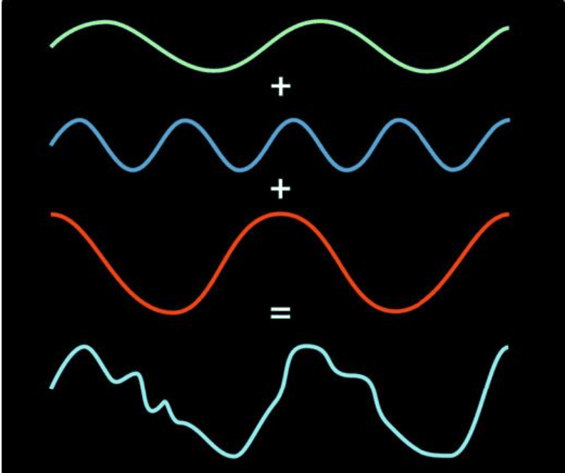
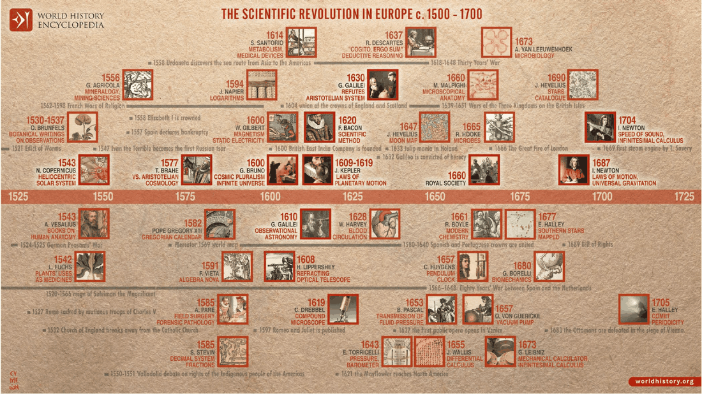
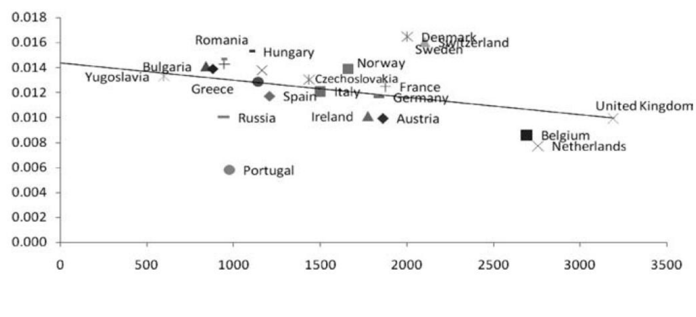
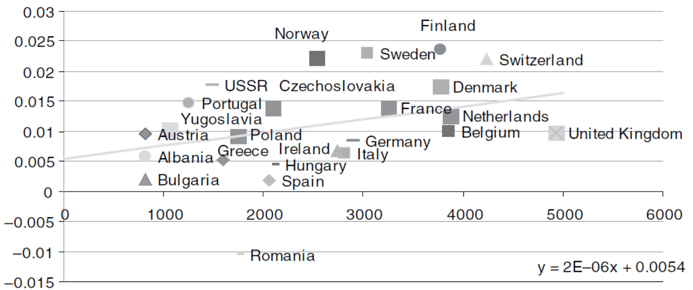
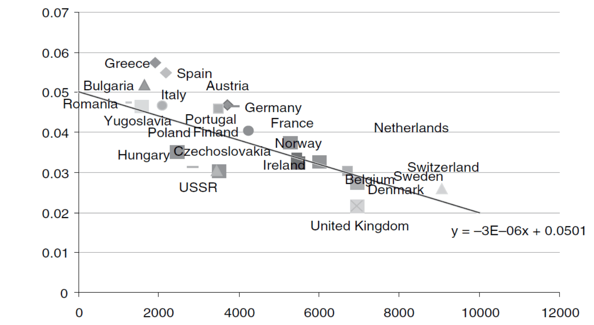
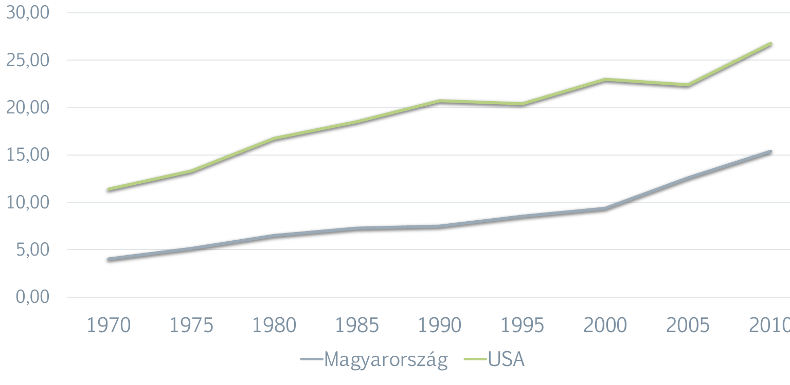

5. fejezet · diák: 85–104
Tudomány, tudás és technológiatranszfer
„Ha az elejétől akarod kezdeni az almás pite elkészítését, előbb fel kell találnod a világegyetemet.”
Carl Sagan
Az 1. fejezetben a hatékonyság két forrását neveztük meg. Az intézményekről már volt szó; most a másikról, a technológiáról lesz: honnan jön az új tudás, mitől gyorsult fel a 19. században, és hogyan jut el azokhoz, akik nem maguk találták fel.
Nyitó eset: a videókártyától a mesterséges intelligenciáig 85–86. dia
Az 1990-es években a játékfejlesztők háromdimenziós világokat tártak a játékosok elé. A 3D-s tartalmak megjelenítése elképesztő mennyiségű, ismétlődő számítást igényel. Ezért a hagyományos, sokféle feladatra alkalmas chipek helyett specializált chipeket terveztek: ezernyi maggal, amelyek egyszerre, párhuzamosan végeznek néhány típusú számítást. Így született a videókártya – az NVIDIA vezette be a GPU elnevezést.
Később kiderült, hogy ezek a chipek különösen hasznosak a kriptovaluták alapját képező hashműveletekhez, és a gépi tanuláshoz szükséges párhuzamos mátrixműveletekhez is. Ma ezért működik a gépi tanulás, és ezért válnak egyre okosabbá a mesterségesintelligencia-alapú társalgó programok. A Quake (1996) vagy az Unreal Tournament (1999) nélkül talán nem létezne sem Bitcoin, sem ChatGPT.
Az NVIDIA éves bevétele a 2000-es években, amikor a gamerek voltak a fő vásárlók, 1–2 milliárd dollár volt. Ma, amikor az adatközpontok tonnaszám veszik a chipjeit, a bevétele ennek legalább százszorosa, a cég értéke pedig ennek ezerszerese.
Az eset két dolgot mutat. Egyrészt az új tudás gyakran váratlan helyen születik, és egészen más területen válik igazán hasznossá. Másrészt egy technológia értéke azon múlik, hány területen lehet alkalmazni – erre a fejezetben az „általános célú technológia” fogalmával térünk vissza.
A fejezet kérdése: mitől gyorsult fel a technikai haladás az utolsó két évszázadban, és miért nem jut el az új tudás automatikusan mindenkihez?
Útiterv
✏️ Gondold végig – A GPU
- Mit tanít a GPU története az innováció kiszámíthatóságáról?
Mintaválasz
Hogy az innováció nehezen tervezhető: egy szórakoztatóipari igényre (3D-s játékok) fejlesztett eszköz évtizedekkel később a kriptovaluták és a mesterséges intelligencia kulcsa lett. Ezért fontos, hogy sokan, sokféle irányban próbálkozhassanak.
Gyakorlati és tudományos megismerés 87–88. dia
Kétféleképpen jöhet létre új technológia: kitapasztaljuk, mi működik, vagy megértjük, miért működik.
Gyakorlati tanulás: hosszú évek tapasztalatai, próbálkozásai alapján kitapasztalják, mi az, ami működik – anélkül, hogy értenék, miért.
Tudományos megismerés: szisztematikus törekvés az ok-okozati összefüggések megértésére, és az eredmények empirikus (kísérleti) tesztelése.
A 19. századig az új technológiai megoldások zöme nem tudományos eredményeken alapult. Két példa:
- Hőkezelés és pasztőrözés: Nicolas Appert már a 19. század elején kidolgozta a hőkezeléses tartósítás alapjait. Louis Pasteur csak az 1850–1860-as években mutatta ki, hogy a romlást mikroorganizmusok okozzák, amelyeket hővel el lehet pusztítani.
- Vakcina (a név a tehénhimlő latin nevéből, a variolae vaccinae-ból ered): Edward Jenner 1798-ban egy évezredek óta létező gyakorlatot tökéletesítve létrehozta az első dokumentált vírus elleni védőoltást – a vírusokat azonban csak kb. 100 évvel később fedezték fel.
Mivel a gyakorlati tanulás próbálkozásokon alapul, a technológia lassan, fokozatosan változik: lépésről lépésre egyre jobban működő megoldásokat találnak. A tudományos eredmények a 19. század végétől és a 20. században gyakorolnak nagy hatást az innovációra – ettől kezdve érezhetően gyorsul a technikai haladás.
ok-okozati megértés → nem kell vakon próbálkozni → célzott fejlesztés → gyorsabb technikai haladás
A Fourier-sortól a Netflixig
A tudomány hatása azonban nem mindig azonnali – néha több száz év kell, mire egy elméleti eredményből gyakorlati haszon lesz.
- A 18–19. század kérdése: hogyan írható le matematikailag egy rezgő húr mozgása vagy a hő terjedése?
- Joseph Fourier (1822) megoldotta a hővezetés differenciálegyenletét. Eredménye a Fourier-sor: egy változó bármely függvénye felírható szinusz- és koszinuszfüggvények (végtelen) összegeként.
- Továbbfejlesztették: Dirichlet (1829), Hilbert (1899), Kolmogorov (1926).
- Egyszerűen: a Fourier-analízis egy összetett jelet egyszerű, különböző frekvenciájú összetevőkre bont, a Fourier-szintézis ezekből újra összerakja a jelet.
- Ez teszi lehetővé, hogy a hang- és képhullámokat sokkal kevesebb adattal írjuk le. Ebből született a jpeg (1986) és az mp3 (Fraunhofer Intézet, 1987) – és ez a streaming alapja.

✏️ Gondold végig – Gyakorlati és tudományos megismerés
- Miért gyorsult fel a technikai haladás, amikor a tudomány az innováció forrásává vált?
Mintaválasz
Mert aki érti az ok-okozati összefüggéseket, annak nem kell vakon próbálkoznia: célzottan tervezhet új megoldásokat, és egy elméleti eredmény sok különböző alkalmazást szülhet. A gyakorlati tanulás ezzel szemben lassú, fokozatos javulást hoz.
- Mit mutat Jenner és Appert példája?
Mintaválasz
Hogy működő technológia tudományos magyarázat nélkül is születhet: a vakcina és a hőkezelés gyakorlati tapasztalatból jött létre, a magyarázat (vírusok, mikroorganizmusok) csak évtizedekkel később.
A tudományos felvilágosodás: miért a Nyugat? 89–91. dia
A tudományos módszer nem a Nyugaton kezdődött. A Római Birodalom bukása után Európában szinte megszűnt az írásbeliség – ez volt a „sötét kor”. Eközben máshol virágzott a tudomány:
Arab reneszánsz
- 707, Damaszkusz: bimaristan – a világ első kórháza;
- 859, Fez: az Al-Karaouine – a világ első egyeteme;
- 9. század, Bagdad: a Bölcsesség Háza – az ókori művek arab fordítása.
Kínai eredmények
- Cseng Ho felfedezőútjai Arábiától Ausztráliáig (1405–1433): 300 hajós flotta, 28 ezres személyzet, a legnagyobb hajó 120 méter hosszú.
Hanyatlás Keleten: a gazdaság, a politika és a vallás egysége megmaradt, így a vallás és a központi hatalom elég erős volt ahhoz, hogy elnyomja a kísérletezést.
- 1500-tól Kínában halálbüntetés várt arra, aki kétárbocosnál nagyobb hajót épített.
- 1515-ben I. Szelim szultán halálbüntetéssel sújtotta, akit nyomdai tevékenységen kaptak.
Felemelkedés Nyugaton: a fő ok a politikai megosztottság – mindig voltak toleráns és befogadó államok, ahová az üldözött gondolkodók elmenekülhettek. A reformáció is ezért terjedhetett el, ebben a nyomdának döntő szerepe volt.
Ne mondd, hogy Keleten „nem volt tudomány”! Voltak kiemelkedő eredmények; a különbség az, hogy a központosított hatalom ott meg tudta állítani a kísérletezést, a megosztott Európában viszont senki sem tudta mindenhol betiltani. Ez a gondolat a 8. fejezetben tér vissza.
A 16–17. században Nyugaton kialakult a tudományos empiricizmus:
- Francis Bacon, Galileo Galilei: a tudományos kísérlet szerepe;
- Newton, Leibniz, Descartes: a matematikai gondolkodás;
- széles földrajzi spektrum: Itália, a német és francia nyelvterület, Németalföld, Skandinávia és Nagy-Britannia.
A tudós társadalmi rangja is megváltozott. Voltaire így írt Newton 1727-es temetéséről: „Láttam egy matematikaprofesszort, akit csak azért, mert nagyot alkotott a mestersége terén, úgy temettek el, mint egy, az alattvalóival jóságos királyt.”

Néhány mérföldkő az idővonalról: Kopernikusz napközéppontú világképe és Vesalius anatómiája (1543), Kepler bolygómozgási törvényei (1609), Galilei távcsöves megfigyelései (1610), Harvey a vérkeringésről (1628), Descartes Értekezés a módszerről (1637), a londoni Royal Society megalapítása (1660), Newton Principiája (1687).
✏️ Gondold végig – Tudományos felvilágosodás
- Miért hanyatlott a tudomány Keleten, és miért emelkedett fel Nyugaton a diasor szerint?
Mintaválasz
Keleten a gazdaság, a politika és a vallás egysége megmaradt, így a központi hatalom el tudta nyomni a kísérletezést (hajóépítési tilalom Kínában, nyomdatilalom az Oszmán Birodalomban). Nyugaton a politikai megosztottság miatt mindig volt toleráns állam, ahol az új gondolatok túlélhettek, és a nyomda segítette a terjedésüket.
- Mit mutat Newton temetése a tudomány társadalmi megítéléséről?
Mintaválasz
Hogy a tudós a 18. századi Angliában királynak kijáró tiszteletet kapott: a tudományos teljesítmény társadalmi presztízst adott. Ez ösztönzőt jelentett a tudományos pályára.
Fokozatváltás: az 1. és a 2. ipari forradalom 92–95. dia
Meglepő, de az ipari forradalom első nagy feltalálói nem tudósok voltak:
- Gutenberg kovács és aranyműves volt; Hargreaves asztalos;
- Stephenson gépkezelő, aki 18 évesen tanult meg írni; Fulton portréfestő és ékszerészinas;
- Arkwright parókakészítő; Edison három hónapot járt iskolába.
Általános célú technológia: olyan találmány, amely sok iparágban hasznosítható, ezért sok területen javítja a hatékonyságot. Ezek a legnagyobb hatású találmányok. Mögöttük már tudósok sora áll:
- gőzerő: Galilei, Torricelli, Huygens, von Guericke;
- elektromosság: Galvani, Volta, Davy, Faraday, Ampère, Ohm;
- számítástechnika: Leibniz, Pascal, Babbage, Turing, Neumann.
A fokozatváltás a jövedelem növekedési ütemén is látszik. Angliában:
| Időszak | Növekedés (%/év) | Duplázódási idő |
|---|---|---|
| 1760–1800 | 0,20 | 347 év |
| 1800–1830 | 0,52 | 134 év |
| 1830–1870 | 1,98 | 35 év |
Egy évszázad alatt a jövedelem duplázódási ideje egy emberöltőnyire rövidült: a nagyszülők és az unokák már egészen más világban éltek.
A két ipari forradalom tudásbázisa
1. ipari forradalom (Anglia)
A gyakorlati tanuláson alapul: mesteremberek, gépkezelők próbálkozásain.
2. ipari forradalom (USA, Németország)
Már inkább a tudományos megismerésen alapul: ipari kutatólaborok, egyetemek.
- Az USA titka: szabványosítás és tömegtermelés. Előfutára Jacquard lyukkártyás vezérlésű szövőgépe (1804). Henry Ford mondása szerint: „Vevőink bármilyen színben megrendelhetik az autójukat, feltéve, hogy a szín fekete.” Az ipari kutatás is itt intézményesült: Thomas Edison Menlo Park-i laborja (1876), a General Electric kutatólaboratóriuma (1900).
- Németország: kartellek és nagyon erős vegyipar. A német egyetemek a 19. század végétől Hitler hatalomra kerüléséig az elméleti és alkalmazott kutatás centrumai voltak. Az 1880-as évektől főleg a festékgyárak (BASF, Bayer, Hoechst) hoztak létre kutatólaborokat.
Mit adott a gyakorlati és a tudományos tudás?
- Erőforrások megtakarítása, hatékonyabb kihasználása. 1700 és 1875 között a gőzgépek egy lóerőre jutó szénigénye a töredékére csökkent. A gépek munkaerőt váltottak ki: 1870-re Nagy-Britannia gőzgépei együtt 4 millió lóerőt adtak – ez negyvenmillió ember munkája, akiknek az élelmezéséhez az ország élelmiszertermelésének háromszorosa kellett volna. Gabona helyett szénnel, majd olajjal hajtják a munkát: izom helyett az agy.
- A természeti erőforrások korlátainak enyhítése.
- Minőségjavulás. Bár a szabványosítás és a tömegtermelés sokak szemében minőségromlást jelent, a legtöbb termék minősége jelentősen javult. A reálbér-számítások (napi bér / termékár) ezt nem veszik figyelembe – az életszínvonal így még látványosabban emelkedett, mint a statisztikák mutatják.
- Új termékek és eljárások: vasbeton, dinamit, robbanómotor, műtrágya.
- Új természeti erőforrások bevonása (pl. kőolaj, alumínium).
A diasor szövege szerint egy lóerő szénigénye 1700 és 1875 között „45-ször feleződött”. Ez valószínűleg a 45-ödére csökkenést jelenti – a pontos számot úgysem kell megtanulni, a nagyságrendi javulás a lényeg.
A minőségjavulás legszebb példája William Nordhaus számítása a világítás áráról. Mennyibe került 1000 lumen fény egy órán át?
| Időszak | Ár (2018-as USD) | Költség munkaórában |
|---|---|---|
| Neolitikum | 50 | |
| 1800 | 785 | 5,4 |
| 1900 | 0,22 | |
| 1992 | 0,23 | 0,00012 |
A neolitikumban egy órányi jó világításért 50 órát kellett dolgozni (fát gyűjteni, mécsest készíteni), 1992-ben egy másodpercnél is kevesebbet. A fény munkaórában mért ára négyszázezred részére esett – miközben a villanykörte fénye jobb, biztonságosabb és kényelmesebb, mint a gyertyáé.
✏️ Gondold végig – Fokozatváltás
- Miért van nagyobb hatása az általános célú technológiáknak, mint egy-egy iparági találmánynak?
Mintaválasz
Mert sok iparágban felhasználhatók (a gőzerő a bányában, a textiliparban és a közlekedésben is), ezért egyszerre sok helyen javítják a hatékonyságot, és újabb találmányokat is lehetővé tesznek.
- Mi a különbség az 1. és a 2. ipari forradalom tudásbázisa között?
Mintaválasz
Az 1. (Anglia) a gyakorlati tanuláson alapult – a feltalálók mesteremberek voltak. A 2. (USA, Németország) már a tudományos megismerésen: ipari kutatólaborok (Edison, GE, BASF, Bayer), egyetemi kutatás, szabványosítás és tömegtermelés.
- Miért becsülik alá a reálbér-statisztikák az életszínvonal javulását?
Mintaválasz
Mert a bér és a termékár hányadosa nem veszi figyelembe, hogy a termék közben jobb lett, és hogy teljesen új termékek is megjelentek. Nordhaus fényár-számítása szerint a valódi javulás nagyságrendekkel nagyobb, mint amit a hagyományos árindexek mutatnak.
Az innovációra épülő fejlődés modellje 96. dia
Ma az innováció már nem magányos feltalálók műve, hanem egy egész rendszeré. A modell lépései:
alapkutatás → kutatás-fejlesztés (K+F) → szabadalom → vállalkozás → termék
- Alapkutatás (főleg egyetemeken): elméletek és publikációk.
- K+F egyetemeken és kutatóintézetekben. Az USA pl. a GDP 2%-át fordítja rá, 1,5 millió kutatóval; Kínában 2 millió kutató dolgozik (Guile és Wagner, 2023).
- Az eredményes K+F kimenete a szabadalom. Az USA-ban bejegyzett szabadalmak 90%-ából nem lesz termék.
- A szabadalomból vállalkozások révén lesz termék. A startupok kb. 90%-a elbukik (közelítő népi bölcsesség).
Hány szabadalom kell egy sikeres termékhez? Ha a szabadalmak 10%-ából lesz termék, és ezek 10%-ából sikeres termék, akkor 0,1 · 0,1 = 0,01: 100 szabadalomból 1.
A hazai eredetű szabadalmi bejelentések száma 2021-ben (OECD): Magyarország 433, USA 262 ezer, Kína 1,427 millió.
- nagyon sok szabadalom;
- piaci igény – akár az állam által generált igény – új termékekre;
- nagyon sok tőke, tudás és szolgáltatás az új vállalatok létrehozásához.
✏️ Gondold végig – Az innovációs modell
- Miért nehéz egy kis országnak az innovációra épülő fejlődési modellt követnie?
Mintaválasz
Mert a modellhez nagyon sok szabadalom kell (100-ból kb. 1 lesz sikeres termék), és sok tőke, tudás, szolgáltatás a vállalkozásokhoz. Egy kis ország kevés szabadalmat ad be (Magyarország 2021-ben 433-at, az USA 262 ezret), így kicsi az esélye a sikeres termékekre – hacsak nem kapcsolódik be nemzetközi innovációs hálózatokba.
- Milyen szerepe lehet az államnak az innovációs modellben?
Mintaválasz
Finanszírozhatja az alapkutatást és a K+F-et (egyetemek), és piaci igényt teremthet új termékekre (pl. hadiipari, űrkutatási vagy egészségügyi megrendelések).
Tudástranszfer és felzárkózás 97–100. dia
Ha a tudás ilyen nehezen születik, jó hír, hogy nem kell mindenkinek újra feltalálnia. A tudás átadható – erről szól a transzfer.
Tudástranszfer: az a folyamat, amely során a tudás, az ötletek és a tapasztalatok a forrástól a befogadóhoz áramlanak úgy, hogy a befogadó alkalmazni is tudja őket.
A tudás nem versengő jószág: attól, hogy mi felhasználjuk, más is használhatja – sőt, használat közben a tapasztalatok révén gyarapodik. (Egy almát csak egyvalaki ehet meg; a Pitagorasz-tételt mindenki használhatja.)
Nyugaton a tudományos ismeretek nyílt hozzáférésének kultúrája alakult ki: a tudósok publikálnak, nem titkolóznak. A szabadalom és a szellemi tulajdon védelme ezzel szemben kettős hatású:
Ösztönöz: ideiglenesen (ma 20 + 5 évig) kizárólagos profitot, monopoljáradékot biztosít a feltalálónak – így megéri feltalálni.
Lassít: amíg a szabadalom érvényes, mások nem használhatják szabadon a tudást – így lassul a transzfer.
A visszamaradottság előnye
A visszamaradottság előnye (Gerschenkron, Veblen): a kevésbé fejlett országok a tudás- és technológiatranszfer miatt gyorsabban fejlődhetnek, mert már kész, működő technológiát vehetnek át – nem kell kifizetniük a próbálkozások költségét.
Béta-konvergencia: a fejlődő országok közelítenek a fejlettekhez – a szegényebbek gyorsabban nőnek. Okai:
- transzfer;
- strukturális konvergencia: a munkaerő átáramlik a hatékonyabb szektorokba (pl. a mezőgazdaságból az iparba);
- Solow-hatás: ha alacsonyabb az egy főre eső tőkeállomány, gyorsabb a növekedési ütem (minden új gép sokat hoz).
De a transzfer sikerének intézményi feltételei vannak:
- olyan nemzetközi rend, amelyben lehetséges az országok közötti áramlás;
- az oktatási küszöb átlépése a befogadónál – legyen, aki érti az új tudást;
- pénzügyi rendszer, amely biztosítja a vállalkozásindítás tőkeigényét;
- a modern gazdaságok egyéb intézményi feltételei (4. fejezet).
A transzfer nem automatikus. A mintazh egyik kérdése épp az, miért nem vezet automatikusan felzárkózáshoz a külföldi technológia átvétele: képzettség, finanszírozás és befogadó intézmények nélkül az alkalmazás gyenge marad. És figyelj: a Solow-hatás szerint az alacsonyabb tőkeállomány jár gyorsabb növekedéssel, nem a magasabb.
Valóban felzárkóztak-e a szegényebb országok? Az alábbi három ábra vízszintes tengelyén az egy főre jutó GDP szintje (az időszak elején), a függőlegesen az éves növekedési üteme van. Ha a pontok jobbra lefelé lejtenek, a szegényebbek nőttek gyorsabban – ez a konvergencia.



A három korszak összevetése a fejezet egyik legfontosabb tanulsága: a konvergencia nem természeti törvény. Nyitott, működő nemzetközi rendben (1870–1914, 1950–1975) a szegényebbek felzárkóznak, a világrend szétesésekor (1914–1950) a különbségek nőnek.
✏️ Gondold végig – Tudástranszfer
- Miért nőhet gyorsabban egy szegényebb ország, mint egy gazdag?
Mintaválasz
A visszamaradottság előnye miatt: kész technológiát vehet át (transzfer), a munkaerőt átcsoportosíthatja a mezőgazdaságból a termelékenyebb iparba (strukturális konvergencia), és mivel kevés a tőkéje, minden új befektetés sokat hoz (Solow-hatás).
- Egy ország külföldi gyárakat telepít, mégsem zárkózik fel. Mi hiányozhat?
Mintaválasz
A transzfer intézményi feltételei: képzett munkaerő és mérnökök, akik értik és továbbfejlesztik a technológiát (oktatási küszöb); hazai vállalkozásokat finanszírozó pénzügyi rendszer; befogadó intézmények; nyitott nemzetközi rend. Ezek nélkül a technológia „sziget” marad.
- Miért nem volt konvergencia 1914 és 1950 között?
Mintaválasz
Mert a transzfer első feltétele, a nyitott nemzetközi rend szétesett: két világháború, a nagy válság, a protekcionizmus és az aranystandard összeomlása megszakította a kereskedelmet és a tudás áramlását.
Emberitőke-elmélet 101–104. dia
A transzfer egyik feltétele, hogy legyen, aki érti az új tudást. Ezzel elérkeztünk a tudás harmadik formájához: ahhoz, ami az emberekben van.
Emberi tőke: a munkaerőben rejlő készségek és termelékeny tudás. Az emberi tőke fejleszthető – oktatással, képzéssel, egészséggel –, és ennek eredményeként nő az emberekben rejlő erőforrás (Gary Becker).
Endogén növekedéselmélet (Romer, Lucas): a tudásszint emelkedése a saját mértékét meghaladó kibocsátásnövekedést eredményez.
befektetés oktatásba és kutatásba → több tudás → a tudás nem versengő, mindenki hasznosíthatja → a kibocsátás jobban nő, mint a tudás
Az „endogén” azt jelenti, hogy a technikai haladás nem kívülről, „az égből” hull a gazdaságba (mint Solow eredeti modelljében), hanem a gazdaság szereplőinek döntéseiből – oktatási és kutatási befektetéseiből – jön létre. Paul Romer ezért 2018-ban Nobel-díjat kapott.
Az emberi tőke felhalmozása évszázados folyamat. Az oktatásban töltött évek átlagos száma:
| Év | Kína | Franciaország | Németország | Magyarország | Hollandia | Nagy-Britannia | USA |
|---|---|---|---|---|---|---|---|
| 1850 | 0,8 | 3,0 | 2,6 | ||||
| 1870 | 1,0 | 4,1 | 5,4 | 2,6 | 5,0 | 3,6 | 5,6 |
| 1880 | 1,0 | 4,9 | 5,7 | 3,0 | 5,3 | 4,4 | 6,0 |
| 1890 | 1,1 | 5,8 | 6,1 | 3,6 | 5,4 | 4,8 | 6,6 |
| 1900 | 1,2 | 7,0 | 7,0 | 4,6 | 5,8 | 5,9 | 7,5 |
| 1910 | 1,3 | 7,5 | 7,5 | 4,8 | 6,1 | 6,3 | 7,8 |
| 1930 | 1,3 | 7,7 | 7,7 | 5,1 | 6,4 | 6,7 | 8,5 |
| 1950 | 1,7 | 8,1 | 8,5 | 6,1 | 7,1 | 7,8 | 9,6 |
| 1970 | 3,5 | 10,0 | 11,1 | 7,9 | 9,0 | 10,1 | 11,1 |
| 1990 | 5,6 | 11,5 | 13,1 | 9,87 | 10,7 | 12,2 | 12,7 |
| 2010 | 7,7 | 12,5 | 13,0 | 11,2 | 11,5 | 13,3 | 13,6 |
Figyeld meg: Németország és az USA már 1870-ben 5–6 évet töltött iskolában – épp azok az országok, amelyek a tudásigényes 2. ipari forradalmat vezették. Magyarország végig 2–3 évvel lemaradva követte őket.
A felsőfokú végzettségűek aránya is ezt mutatja: Magyarországon 1970 és 2010 között kb. 4%-ról 15%-ra nőtt a 15 év felettiek körében, az USA-ban kb. 11%-ról 27%-ra – a különbség nem csökkent.

Tudás és növekedés – tanulságok
- A növekedés fakadhat az emberi és a fizikai tőkébe való befektetésből, illetve a technikai haladásból.
- A tudás nem versengő, de a terjedése nem automatikus: a transzferhez befogadóképesség, oktatás, finanszírozás és megfelelő intézmények kellenek.
- A nyitottság gyorsíthatja a felzárkózást, a háború és a világrend szétesése megszakíthatja.
- A gazdasági válságok a fejlődő, nyitott országokat sújtják leginkább.
- Politikai hibák (pl. Argentína) és kizsákmányoló intézmények (keleti blokk) lemaradáshoz vezetnek.
- Romer és Lucas (endogén növekedéselmélet): a tartós növekedés fő forrása az emberi tőkébe, az oktatásba és a kutatásba való befektetés.
Argentína a 20. század elején a világ tíz leggazdagabb országa közé tartozott, majd a sorozatos politikai válságok, a protekcionizmus és a gazdaságpolitikai hibák miatt fokozatosan lemaradt. A keleti blokk országai pedig hiába fektettek sokat az oktatásba, a kizsákmányoló intézmények miatt a tudás nem vált versenyképes innovációvá.
✏️ Gondold végig – Emberi tőke
- Miért hozhat a tudásba való befektetés a saját mértékét meghaladó növekedést?
Mintaválasz
Mert a tudás nem versengő jószág: ha valaki rájön valamire, azt sokan használhatják egyszerre, és használat közben még gyarapodik is. Így egy egységnyi új tudás sok helyen növeli a kibocsátást – ez az endogén növekedéselmélet állítása (Romer, Lucas).
- Miért nem elég a magas iskolázottság a felzárkózáshoz? Hozz példát!
Mintaválasz
Mert a tudásnak hasznosulnia is kell: befogadó intézmények, működő pénzügyi rendszer és nyitott nemzetközi környezet kell hozzá. A keleti blokk országai sokat fektettek az oktatásba, de a kizsákmányoló intézmények és a zárt gazdaság miatt nem zárkóztak fel.
Összefoglalás
- A 19. századig a technológia gyakorlati tanulással, lassan javult; a 19. század végétől a tudományos megismerés gyorsította fel.
- A tudomány Nyugaton azért emelkedhetett fel, mert a politikai megosztottság miatt nem lehetett mindenhol elnyomni.
- A legnagyobb hatásúak az általános célú technológiák; a reálbér-statisztikák a minőségjavulást nem mérik.
- Az innovációs modellhez sok szabadalom, piaci igény és sok tőke kell (100 szabadalomból 1 sikeres termék).
- A tudás nem versengő, a lemaradók átvehetik (visszamaradottság előnye, béta-konvergencia) – de a transzfernek intézményi feltételei vannak, és a világrend szétesése megszakíthatja.
- Az emberi tőke fejleszthető; az endogén növekedéselmélet szerint a tudásba való befektetés a tartós növekedés fő forrása.
Válasz a fejezet kérdésére: a technikai haladás azért gyorsult fel, mert a gyakorlati tanulást kiegészítette a tudományos megismerés, és az általános célú technológiák egész iparágakat alakítottak át. Az új tudás pedig azért nem jut el automatikusan mindenkihez, mert a transzferhez nyitott nemzetközi rend, iskolázott befogadók, finanszírozás és befogadó intézmények kellenek.
Esszéhez: ha ezt látod → ezt használd
| Ha az esetben ez áll… | …akkor ezt a fogalmat / mechanizmust használd |
|---|---|
| Egy ország gyorsan iparosodik, kész külföldi technológiát átvéve | visszamaradottság előnye, béta-konvergencia, tudástranszfer (→) |
| Technológiaátvétel, de nincs felzárkózás | a transzfer intézményi feltételei: oktatási küszöb, pénzügyi rendszer, intézmények, nemzetközi rend (→) |
| Erős oktatási rendszer, sok egyetem, kutatás | emberi tőke, endogén növekedéselmélet (→) |
| Sok szabadalom, startupok, kockázati tőke (pl. Dél-Korea, USA) | az innovációra épülő fejlődés modellje (→) |
| A hatalom betilt egy új technológiát vagy gondolatot | a Kelet hanyatlása: a hatalom egysége elnyomja a kísérletezést (→) |
| Egy találmány sok iparágat átalakít | általános célú technológia (→) |
| Háború, a világkereskedelem összeomlása után lemaradás | a konvergencia megszakadása, 1914–1950 (→) |
Kapcsolódások
- A hatékonyság két forrása, Solow (1. fejezet).
- Szakosodás és tanulás; az intézmények közelítő hatása a transzferre (2. fejezet).
- Pepys és Kremer: több ember, több innovátor; a gyerekek „minősége” (3. fejezet).
- Befogadó intézmények és innováció (4. fejezet).
- A pénzügyi rendszer mint a transzfer feltétele (6. fejezet).
- Európa megosztottsága és versenye; a nyomda (8. fejezet).
- A nemzetközi rend mint a transzfer feltétele (11., 12. fejezet).